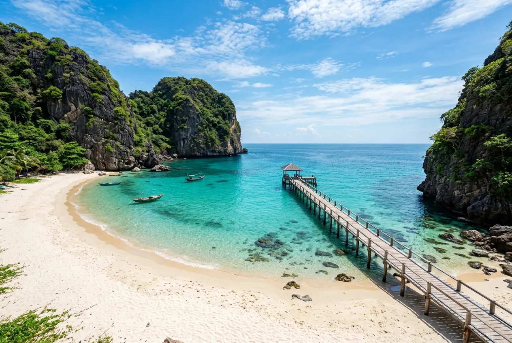
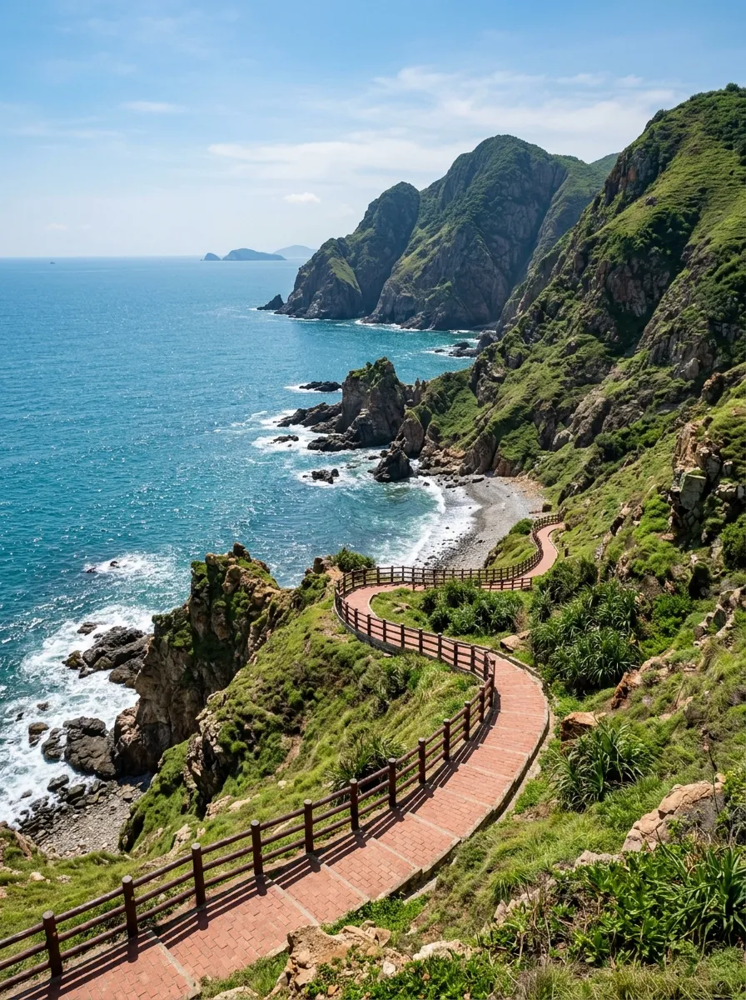
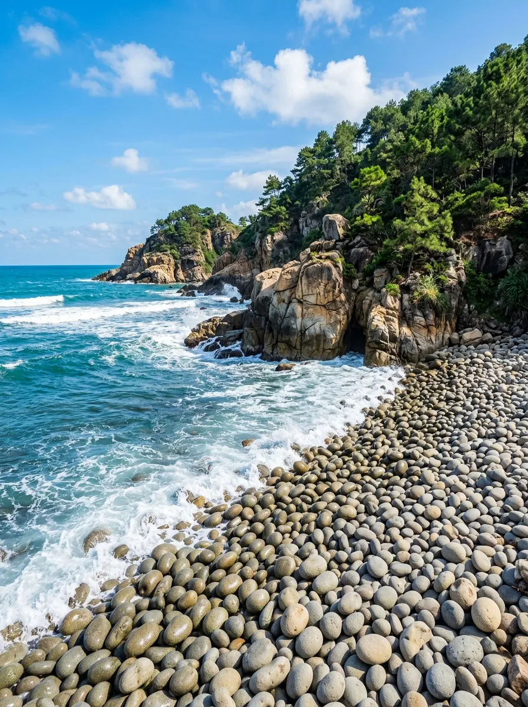
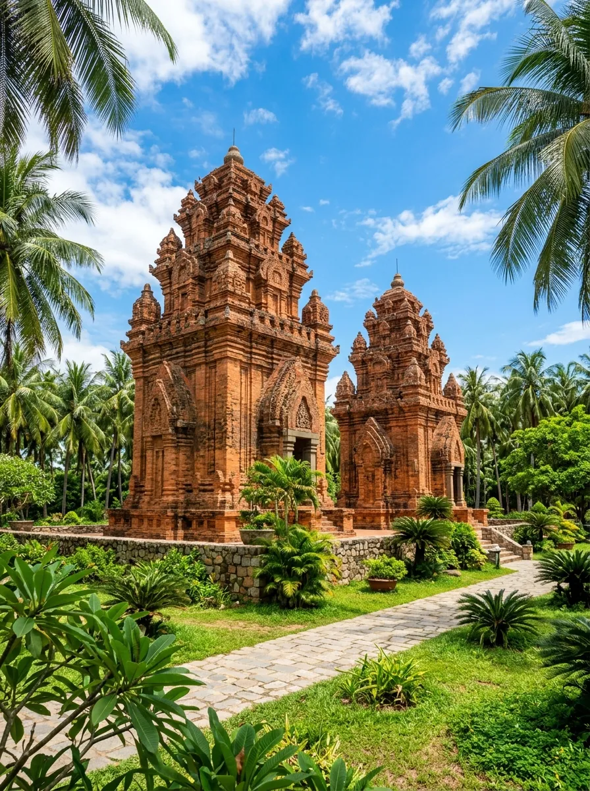

📋 Tổng quan
Quy Nhơn (Bình Định) là một thành phố ven biển miền Trung hiền hòa, nổi tiếng với những bãi cát vàng óng mịn trải dài bên bờ biển xanh ngắt ngút ngàn, những hòn đảo hoang sơ kỳ vĩ và những di tích lịch sử tháp Chàm rêu phong cổ kính có niên đại hàng ngàn năm. Đây được mệnh danh là điểm đến hoang sơ, lý tưởng cho những ai muốn tìm kiếm một hành trình khám phá thiên nhiên biển đảo thuần khiết, chưa bị thương mại hóa.
Khác với sự ồn ào náo nhiệt của những vịnh biển du lịch khác, Quy Nhơn cuốn hút du khách bởi nhịp sống chậm rãi bình yên của những làng chài cổ ven biển, bởi vị mặn mòi sóng nước đại dương tại Kỳ Co, Eo Gió, Hòn Khô, và lòng hiếu khách, hào sảng đậm chất đất võ Bình Định.
📸 Tọa độ Check-in Nổi bật
Khám phá các tọa độ ngắm cảnh và chụp hình đỉnh nhất tại Quy Nhơn. Bấm vào hình ảnh để xem phóng to chi tiết:

Bãi biển Kỳ Co
Bãi tắm hoang sơ với làn nước trong vắt màu ngọc bích nhìn tận đáy cát, ôm trọn bởi bãi cát trắng mịn màng uốn lượn dưới chân núi đá kỳ vĩ.

Eo Gió
Cung đường đi bộ ven vách đá có tay vịn gạch đỏ ôm trọn eo biển lộng gió, điểm đón bình minh rực rỡ và chụp ảnh đỉnh nhất Quy Nhơn.

Ghềnh Ráng Tiên Sa
Quần thể đá nhấp nhô độc đáo với bãi tắm Hoàng Hậu gồm vô số viên đá tròn mịn như trứng chim khổng lồ, nằm bên đồi thi sĩ Hàn Mặc Tử.
Tháp Bánh Ít
Cụm tháp Chàm nghìn năm tuổi tọa lạc kiêu hãnh trên đỉnh đồi lộng gió, mang nét kiến trúc gạch đỏ rêu phong huyền bí nhuốm màu thời gian.
Hòn Khô
Đảo nhỏ hoang sơ nổi tiếng với cây cầu gỗ ôm vách đá mộc mạc và con đường cát xuyên biển lộ ra khi thủy triều rút xuống.
Cù Lao Xanh
Hòn ngọc xanh giữa trùng khơi với ngọn hải đăng Pháp cổ bằng đá cao sừng sững, không gian hoang sơ yên bình tách biệt đô thị khói bụi.

Tháp Đôi
Cặp tháp Champa đứng song hành uy nghi giữa lòng thành phố, được bao quanh bởi công viên dừa xanh mát, xây dựng từ thế kỷ XII.
Đồi cát Phương Mai
Đồi cát khổng lồ với những triền cát thoai thoải lộng gió cạnh bờ biển Nhơn Lý, điểm chơi trượt cát kỳ thú đầy phấn khích.
🚗 Di chuyển & Chi phí
Quy Nhơn nằm cách TP.HCM 650km và Hà Nội 1.050km, hạ tầng giao thông kết nối hoàn hảo:
1. Lựa chọn phương tiện đến Quy Nhơn
- Máy bay: Đáp xuống sân bay Phù Cát (cách Quy Nhơn 35km). Sau đó đi xe buýt sân bay của hãng hàng không hoặc bắt taxi về trung tâm.
- Tàu hỏa (Đường sắt Thống Nhất): Dừng tại ga Diêu Trì (cách trung tâm 15km). Đi tàu đêm vô cùng thích hợp cho những ai thích ngắm cảnh.
- Xe khách giường nằm chất lượng cao: Có nhiều hãng xe chạy thẳng từ TP.HCM dọc quốc lộ 1A đến bến xe Quy Nhơn chỉ mất khoảng 10 - 11 tiếng.
2. Chi phí vé tham khảo một số dịch vụ
Để đi Kỳ Co hay Hòn Khô tự túc, du khách thường di chuyển ra bến tàu Nhơn Lý hoặc Nhơn Hải rồi thuê cano khứ hồi kết hợp lặn ngắm san hô.
| Điểm tham quan / Trải nghiệm | Mức giá tham khảo |
|---|---|
| Cano khứ hồi đi đảo Kỳ Co & lặn san hô Bãi Dứa (Nhơn Lý) | Theo chuyến / ghép cano |
| Cano khứ hồi đi đảo Hòn Khô (Nhơn Hải) | Cự ly gần bến Nhơn Hải |
| Vé vào cổng tham quan Eo Gió du lịch bảo tồn | Vé niêm yết tại cổng |
| Vé tham quan khu du lịch Ghềnh Ráng Tiên Sa | Miễn phí vào cổng (Chỉ tính phí gửi xe) |
| Vé tham quan Tháp Bánh Ít hoặc Tháp Đôi di tích cổ | Vé bảo tồn di tích Cham |
🏨 Lưu trú & Ẩm thực đất võ
1. Gợi ý lựa chọn nơi lưu trú
- Dọc bãi biển trung tâm (Đường Xuân Diệu, An Dương Vương): Khách sạn cao tầng view biển, thuận tiện tắm biển sáng sớm và đi ăn hải sản đêm.
- Khu làng chài Bãi Xép / Nhơn Lý: Thích hợp cho homestay sát biển, bình yên, trải nghiệm cuộc sống người dân chài lưới giản dị.
2. Ẩm thực xứ Nẫu đậm đà
🗓️ Thời điểm vàng & Cảnh báo an toàn
1. Mùa nào đi du lịch Quy Nhơn đẹp nhất?
- Tháng 3 – 8: Mùa khô và là thời điểm vàng đi Quy Nhơn. Biển trong vắt màu ngọc bích, sóng êm ả thuận lợi cho cano chạy đảo và tắm biển cực kỳ an toàn.
- Tháng 9 – 2 năm sau: Mùa mưa bão miền Trung. Biển động mạnh, cano ra Kỳ Co hay Hòn Khô thường bị cấm hoạt động do sóng lớn nguy hiểm.
2. Lưu ý an toàn biển đảo & thời tiết nắng nóng
- Chống nắng kỹ càng: Cái nắng miền Trung tháng 5 - 8 vô cùng gay gắt. Hãy bôi kem chống nắng chỉ số cao, mang mũ rộng vành và uống đủ nước để tránh say nắng khi đi Kỳ Co, Eo Gió.
- Tuyệt đối tuân thủ áo phao khi đi cano: Biển Quy Nhơn có dòng chảy ngầm phức tạp gần các rạn san hô đá. Bắt buộc mặc áo phao khi tắm biển và lặn san hô tại Hòn Khô, Kỳ Co.
⚠️ Cảnh báo bảo vệ san hô: Khi tham gia hoạt động lặn ngắm san hô tại Bãi Dứa (Nhơn Lý) hay Hòn Khô, tuyệt đối không dẫm đạp, bẻ gãy hay đứng lên rạn san hô tự nhiên để bảo tồn hệ sinh thái biển đảo xinh đẹp.